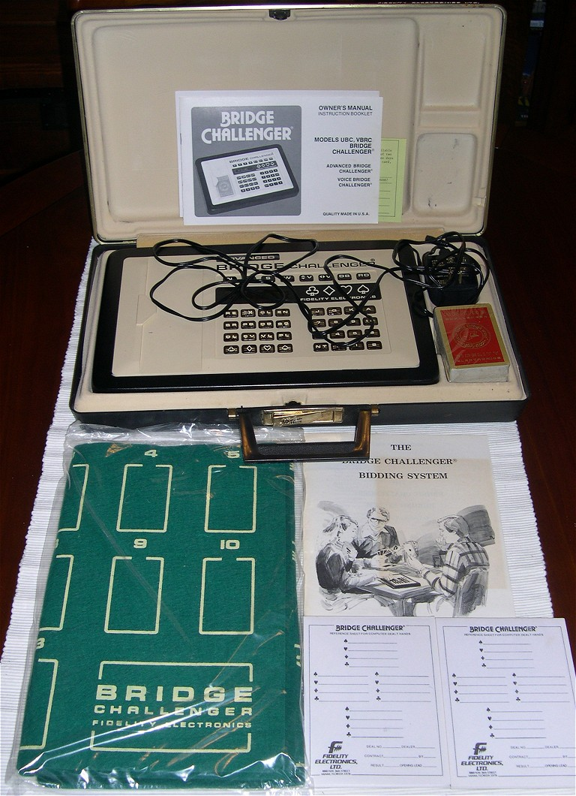

1980
Fidelity Electronics, Inc. (Chicago)
Fidelity Bridge Challenger
An electronic bridge opponent that reads your physical cards by their bar-coded backs

An electronic bridge opponent that reads your physical cards by their bar-coded backs
